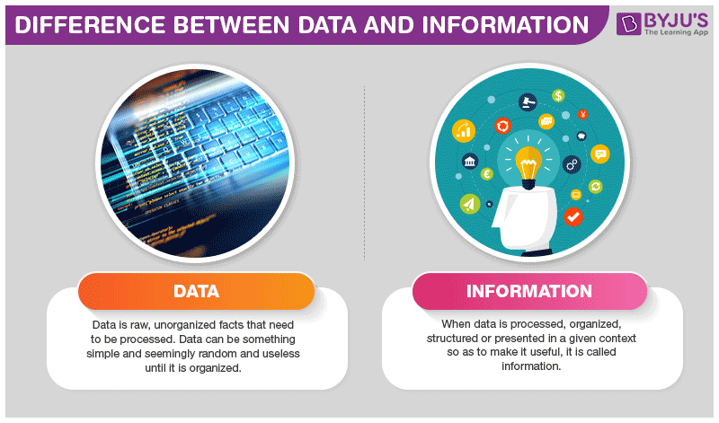
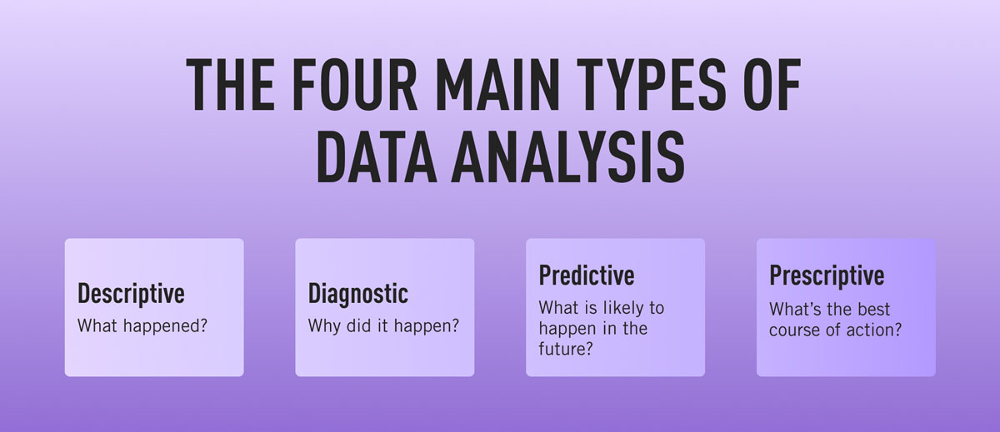

DATA SCIENCE
History of Data Science
While the term data science is not new, the meanings and connotations have changed over time. The word first appeared in the ’60s as an alternative name for statistics. In the late ’90s, computer science professionals formalized the term. A proposed definition for data science saw it as a separate field with three aspects: data design, collection, and analysis. It still took another decade for the term to be used outside of academia.
Data Science
- is a multi-disciplinary field that uses scientific methods, processes, algorithms, and systems to extract knowledge and insights from structured, semi-structured and unstructured data.
- is much more than simply analyzing data. It offers a range of roles and requires a range of skills.
What is data science used for?
- 1. Descriptive analysis
Descriptive analysis examines data to gain insights into what happened or what is happening in the data environment. It is characterized by data visualizations such as pie charts, bar charts, line graphs, tables, or generated narratives.
- 2. Diagnostic analysis
Diagnostic analysis is a deep-dive or detailed data examination to understand why something happened. It is characterized by techniques such as drill-down, data discovery, data mining, and correlations. Multiple data operations and transformations may be performed on a given data set to discover unique patterns in each of these techniques.
- 3. Predictive analysis
Predictive analysis uses historical data to make accurate forecasts about data patterns that may occur in the future. It is characterized by techniques such as machine learning, forecasting, pattern matching, and predictive modeling. In each of these techniques, computers are trained to reverse engineer causality connections in the data.
- 4. Prescriptive analysis
Prescriptive analytics takes predictive data to the next level. It not only predicts what is likely to happen but also suggests an optimum response to that outcome. It can analyze the potential implications of different choices and recommend the best course of action. It uses graph analysis, simulation, complex event processing, neural networks, and recommendation engines from machine learning.
WHAT ARE DATA AND INFORMATION?
Data
- defined as a representation of facts, concepts, or instructions in a formalized manner, which should be suitable for communication, interpretation, or processing by human or electronic machines.
- It can be described as unprocessed facts and figures.

Information
- is the processed data on which decisions and actions are based.
- It is data that has been processed into a form that is meaningful to the recipient and is of real or perceived value in the current or the prospective action or decision of recipient.
- Furtherer more, information is interpreted data; created from organized, structured, and processed data in a particular context.
What is Big Data?
Big data primarily refers to data sets that are too large or complex to be dealt with by traditional data-processing application software. Data with many entries offer greater statistical power, while data with higher complexity may lead to a higher false discovery rate.
Three Characteristics of Big Data
-
Volume
(Data Quantity)
- A typical PC might have had 10 gigabytes of storage in 2000.
- Facebook ingests 500 terabytes of new data everyday.
- The smart phones , the data they create and consume; sensors embedded onto everyday objects will soon result in billions of new, constantly-updated data feeds containing environmental, location and other information, including video.
-
Velocity
(Data Speed)
- Clickstreams and ad impressions capture user behavior at millions of events per second.
- Machine to machine processes exchange data between billions of devices
- Online gaming systems support millions of concurrent users, each producing multiple inputs per second.
-
Variety
(Data types)
- Big Data isn’t just numbers, dates and strings. Big data is also geospastial data, 3d data, audio and video, and unstructured text. Including log files and social media.
- Traditional database systems were designed to address smaller volumes of structured data, fewer updates or a predictable, consistent data structure.
- Big Data analysis includes different types of data.
Back